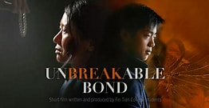

Passionate storyteller igniting inspiration through words. Join me on a journey of motivation, resilience, and personal growth. Follow for uplifting content.
Join Lily and Max on a heartwarming journey as they navigate life’s challenges and discover the power of an unbreakable bondIn a quiet countryside village, nestled amidst fields of blooming flowers and rolling hills, lived two inseparable friends named Lily and Max. From the moment they first met as young children, a deep and unbreakable bond formed between them – a bond that would withstand the test of time and illuminate their lives with warmth and love. Lily and Max were as different as could be. Lily, with her wild curls and infectious laughter, radiated joy and curiosity. Max, with his quiet demeanor and steady presence, offered a sense of calm and stability. Together, they were a perfect balance of energy and serenity – a dynamic duo ready to conquer the world. As they grew older, Lily and Max faced life’s inevitable challenges. Lily’s family struggled with financial hardships, while Max coped with the loss of a loved one. But their friendship remained steadfast, providing solace and strength during the darkest of days. One summer, Lily and Max stumbled upon a worn-out wooden box nestled among the forgotten treasures in Lily’s attic. Inside the box, they discovered a collection of handwritten letters – a correspondence that spanned decades and told a tale of a friendship much like their own. Intrigued, Lily and Max dove into the letters, immersing themselves in the stories of Ada and Samuel – a friendship that had blossomed in the same village long before Lily and Max were born. Ada, with her spirited nature, reminded Lily of herself, while Samuel’s gentle wisdom resonated with Max. Through the letters, Lily and Max learned about the trials and triumphs Ada and Samuel had encountered throughout their lives. They discovered that Ada had dreams of becoming an accomplished artist, while Samuel aspired to build a legacy of kindness and compassion. Their friendship, like a thread woven through time, supported and inspired each other’s dreams. Inspired by Ada and Samuel’s unwavering support for one another, Lily and Max embarked on their own journey of self-discovery and friendship. They encouraged each other to pursue their passions and face their fears head-on. Lily enrolled in art classes, honing her skills as a painter, while Max volunteered at a local animal shelter, nurturing his love for animals. As the years passed, Lily and Max navigated the complexities of adulthood together. They celebrated each other’s victories and offered comfort during moments of heartache. They witnessed the ebb and flow of life – the joys and sorrows, the highs and lows – and remained steadfast in their unwavering support for one another. In a small studio on the outskirts of the village, Lily held her first art exhibition. The walls adorned with her vibrant and soulful paintings, reflecting her journey of self-expression and growth. Max stood by her side, his unwavering presence a reminder of their unbreakable bond. At the exhibition’s opening night, Lily and Max found themselves surrounded by friends, family, and members of their community. As they basked in the warmth of their accomplishments, Lily couldn’t help but reflect on the lessons she and Max had learned throughout their journey: Self Improvement
True friendship is a precious gift. Cultivate and nourish the bonds you form with others. Support and encourage one another, celebrating each other’s successes and offering solace during challenging times. Together, you can conquer any obstacle that comes your way.
Throughout Ada and Samuel’s correspondence, Lily and Max witnessed the transformative power of love and kindness. Carry these virtues in your heart, spreading compassion and understanding to those around you. Small acts of kindness can have a ripple effect, creating a more harmonious and loving world.
Ada and Samuel’s story taught Lily and Max the importance of pursuing their dreams wholeheartedly. Embrace your passions, no matter how daunting they may seem. Find the courage to take that first step, knowing that true fulfillment comes from following your heart’s desires.
Throughout Ada and Samuel’s correspondence, Lily and Max witnessed the transformative power of love and kindness. Carry these virtues in your heart, spreading compassion and understanding to those around you. Small acts of kindness can have a ripple effect, creating a more harmonious and loving world.